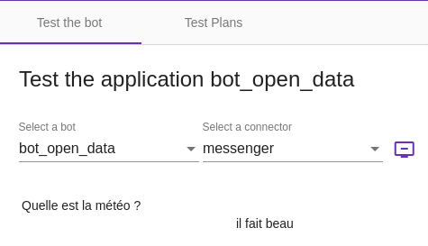
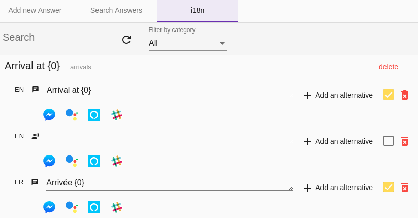

The Stories and Answers menu
The menu allows you to build paths and answers to the user's sentences.
On this page, the details of each tab are presented. See also Create your first bot with Tock Studio for an example of creating a path or Build a multilingual bot for using the Answers tab.
The New Story tab
Create a simple answer
The guide Create your first bot with Tock Studio presents an example of creating a path with a simple answer via New Story.
The Test tab > Test the bot then allows you to quickly check the behavior of the bot on this path.

Creating complex responses
It is possible to indicate several responses and also "rich" responses called Media Message.
This allows, regardless of the channel, to display images, titles, subtitles and action buttons.
Mandatory entities
It is possible, before displaying the main response, to check if certain entities are filled in, and if not, to display the appropriate question.
The corresponding option is called Mandatory Entities.
For example, let's suppose that we need to know the user's destination.
If he has not already indicated it, the bot should ask him "To which destination?".
Actions
Actions are presented as suggestions, when the channel allows it.
It is possible to present a tree of actions to build a decision tree.
The Stories tab
This screen allows you to browse and manage the paths or stories created.
These can be paths configured via Tock Studio (ie. with the New Story tab) but also paths declared programmatically via Bot API. To see the latter, uncheck the Only Configured Stories option.
The Rules tab
This tab contains the following sections:
- Tagged Stories
This section allows you to view the different stories that have a particular function depending on the tags with which they are configured.
We can therefore identify the following types:
- Bot deactivation stories that are tagged with the DISABLE tag
-
Bot reactivation stories that are tagged with the ENABLE tag
-
Story Rules
This section allows you to create or modify deactivation or redirection rules on stories.
- Application Features
This section allows you to manage functions that can be activated or deactivated via the interface (or Feature Flipping).
The Answers tab
This tab allows you to modify the bot's answers, dynamically according to several possible criteria:
-
The language (this is called internationalization or i18n)
-
The channel (text or voice), that is to say in practice the connector
-
According to a rotation: it is possible to record several response texts for the same label in the same language on the same connector - the bot will then randomly answer one of these texts, then perform a rotation so as not to always answer the same thing.
This makes the bot more pleasant by varying its answers.

See also Building a multilingual bot for the use of the Responses tab but also the development aspects on this topic.
Continue...
Go to Menu Test for the rest of the user manual.
You can also go directly to the next chapter: Development.